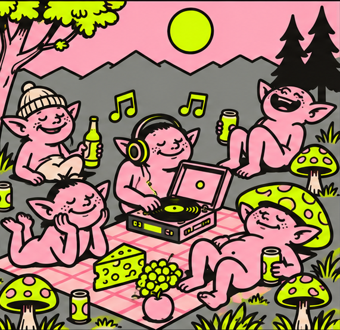

Independent thinking
Creative exploration
Personal portfolio / Vol. 01 / Always in progressCreative exploration
MARTIN PEARSON
An ongoing collection of ideas.

Always in progress
Featured project — to be announced.
Photography
More to come.
Film
More to come.
Music
More to come.
Writing
More to come.
Adventure
More to come.
Business Ventures
More to come.